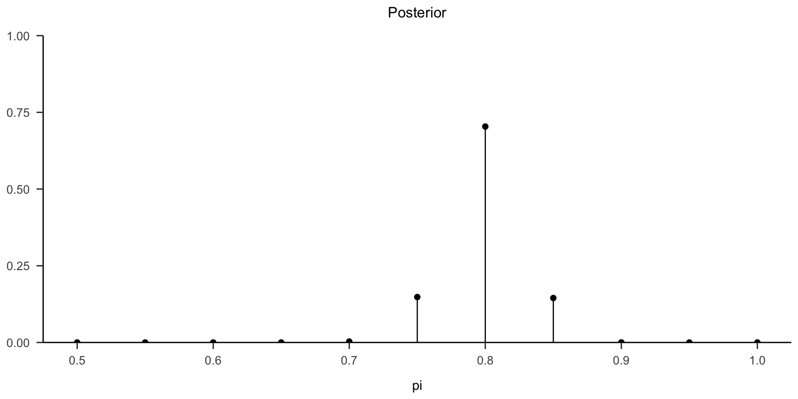
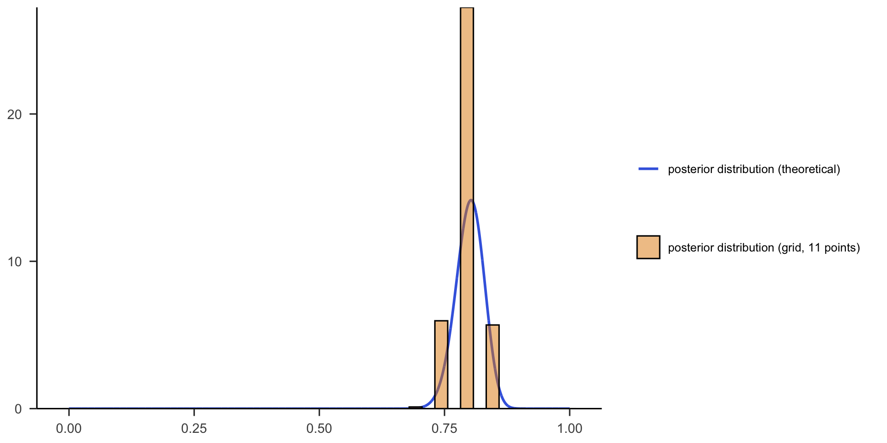
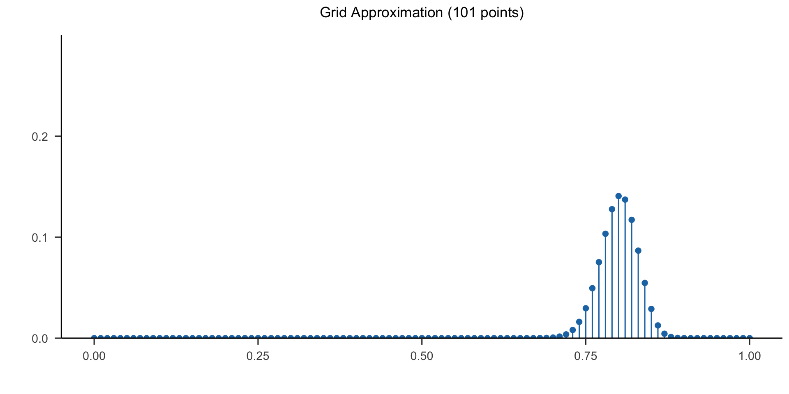
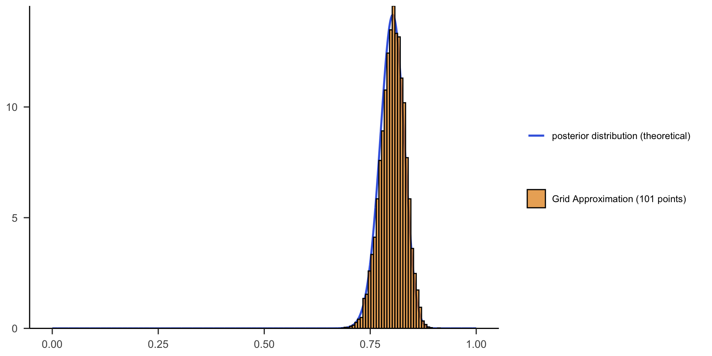
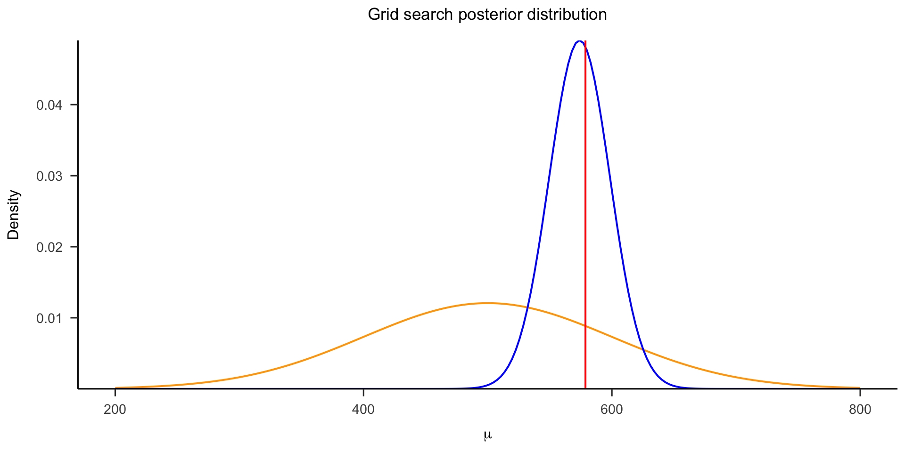
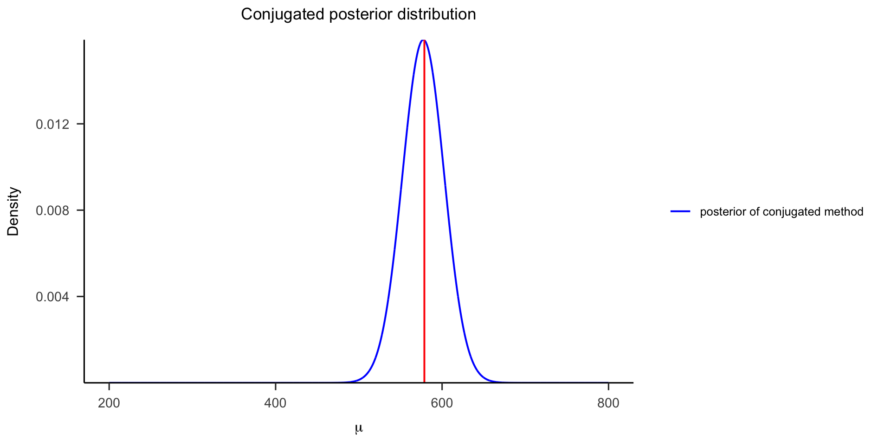
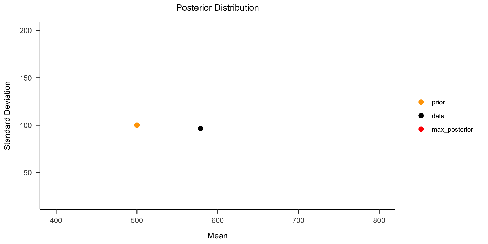

高级心理统计 · 第5讲
《贝叶斯统计与应用》 · Bayesian Inference: 如何获得后验分布
南京师范大学心理学院 · School of Psychology, Nanjing Normal University
回顾 1：三个问题，一条贝叶斯主线
在前面的课程中，我们用“小球抽取”和“随机点运动任务”建立贝叶斯推断的直觉。 三类问题的形式不同，但核心都是：
\[ \text{后验} \propto \text{先验} \times \text{似然} \]
| 层次 | 例子 | 更新目标 |
|---|---|---|
| 单一事件 | 已知“蓝白蓝”后，第 4 次是否抽到蓝色 | \(P(B\mid D)\) |
| 离散变量 | 袋中蓝色小球占比 \(\theta\) 的 5 种可能取值 | \(P(\theta\mid D)\) |
| 连续变量 | 随机点运动任务中的潜在正确率 \(\theta\) | \(f(\theta\mid Y)\) |
变的是“对象”：事件、离散参数、连续参数；不变的是“用数据更新信念”。
回顾 2：单一事件
背景信息
第 2 讲中，我们用“小球抽取”理解贝叶斯更新。观察到有放回抽取结果：
\[ D=\text{“蓝白蓝”} \]
先验
看到数据前，5 种蓝球占比等可能：
\[ \theta \in \{0,\ 0.25,\ 0.5,\ 0.75,\ 1\} \]
\[ P(\theta)=0.2 \]
似然
在某个 \(\theta\) 下，观察到“蓝白蓝”的相对可能性。
如何得到后验
将每个 \(\theta\) 的“先验 × 似然”归一化，得到：
\[ P(\theta|D)=(0,\ 0.15,\ 0.40,\ 0.45,\ 0) \]
预测下一次抽到蓝球
\[ P(\text{下一次蓝}|D)=0.575 \]
回顾 3：离散变量
背景信息
在小球例子中，我们真正推断的是袋中蓝球占比 \(\theta\)。由于袋中只有 4 颗球，\(\theta\) 只能取有限个离散值。
\[ \theta \in \{0,\ 0.25,\ 0.5,\ 0.75,\ 1\}, \qquad P(\theta)=0.2 \]
观察数据
观察到：
\[ D=\text{“蓝白蓝”} \]
| \(\theta\) | 0 | 0.25 | 0.50 | 0.75 | 1 |
|---|---|---|---|---|---|
| 似然支持度 | 0 | 3 | 8 | 9 | 0 |
| 后验 \(P(\theta|D)\) | 0 | .15 | .40 | .45 | 0 |
如何得到后验
\[ P(\theta|D) \propto P(\theta)P(D|\theta) \]
归一化后，后验更支持蓝球比例较高的组成。
回顾 4：连续变量
背景信息
第 3 讲把同样逻辑迁移到随机点运动任务。我们关心被试的正确率 \(\theta\)，它可以是 \([0,1]\) 中任意连续值。
先验
\[ \theta \sim \text{Beta}(70,30) \]
似然
假设 50 次试次中有 30 次正确：
\[ Y|\theta \sim \text{Bin}(50,\theta) \]
如何得到后验
\[ f(\theta|Y) \propto f(\theta)L(\theta|Y) \]
由于 Beta 与 Binomial 共轭：
\[ \theta | (Y=30) \sim \text{Beta}(100,50) \]
Beta-Binomial 的便利在于：后验分布可以通过公式直接得到。
- 但问题随之出现：是不是所有贝叶斯分析都可以如此简洁？
共轭先验 (Conjugate Prior)
共轭先验：在贝叶斯推断中，如果某一类先验分布与给定似然函数结合后，得到的后验分布仍然属于同一个分布家族，那么这个先验就称为该似然函数的共轭先验。
换句话说：
\[ \text{先验} \times \text{似然} \longrightarrow \text{同一家族的后验} \]
例如，若先验为 Beta 分布，似然为 Binomial 分布，则后验仍然是 Beta 分布。
共轭先验的优势：
计算简便：后验分布可以直接通过公式得到，避免复杂积分。
解释清晰：先验参数如何被数据更新，通常有直观含义。
形式封闭：后验仍属于熟悉的分布家族，便于继续推断、抽样和可视化。
其他共轭先验
除了 Beta-Binomial，贝叶斯推断中还有许多常见的共轭先验组合；它们的共同特点是：选择合适的先验后，后验分布可以保持相同的数学形式。

共轭先验面临的挑战
共轭先验非常方便，但实际研究中的模型往往没有这么理想。许多复杂模型并没有简单的共轭先验，因此后验分布中的分母，也就是边缘似然，可能很难直接计算。
当参数或数据维度较高时，计算边缘似然会变得非常困难。
挑战包括：
计算量增加：随着参数数量的增加，多变量积分的计算量呈指数级增长。
解析解难以获得：对于某些复杂的似然函数，可能不存在封闭形式的解析解，使得传统的积分方法无法直接应用。
数值积分的限制：即使使用数值积分方法，也可能因为维度灾难（curse of dimensionality）而面临计算上的困难，导致精度下降或计算成本过高。
因此，现代贝叶斯推断不能只依赖共轭先验。算力的普及使我们可以通过数值方法和近似方法获得后验分布，这也是现代贝叶斯统计能够广泛应用的关键。
对后验的近似 (Approximating the Posterior)
现代贝叶斯方法常用计算方法来获得后验分布。
数值方法：通过较精确的算法直接求解问题，例如数值积分、迭代法和分解法。
近似方法：用可接受的误差换取计算效率，例如网格近似、蒙特卡洛模拟、变分法等。
本课中我们将介绍两种近似方法：
- 网格近似
- 马尔可夫链蒙特卡洛（MCMC）
Grid approximation 网格近似

想象有一张图像，但你不能完整地看到它。不过你可以从左到右每次取一个这个图像中的一个小格来观察它。
只要格子越细，最后组合在一起就会与完整的图片更近似。在网格近似中，后验分布 \(f(\theta | y)\) 其实就是完整的图片。我们可以选择有限个 \(\theta\)，并观察对应的 \(f(\theta | y)\)，以此来近似完整的后验分布。
网格近似：四个步骤
以一个参数为例，网格近似可以分为四步：
- 选定一系列离散的 \(\theta\) 值。
- 计算每个 \(\theta\) 值对应的先验 \(f(\theta)\) 和似然 \(L(\theta|y)\)。
- 将 \(f(\theta)\) 与 \(L(\theta|y)\) 相乘并归一化。
- 根据归一化后的后验概率抽取参数样本。
下面用 Beta-Binomial 例子演示。
示例：Beta-Binomial 网格近似
设定先验与似然：
\[ \pi \sim \text{Beta}(\alpha = 70, \beta = 30), \qquad Y|\pi \sim \text{Bin}(100,\pi) \]
假设 \(Y=90\)，共轭公式给出：
\[ \pi | (Y=90) \sim \text{Beta}(160,40) \]
接下来暂时不使用公式解，而是用网格近似估计后验。
准备：加载 R 包
Step 1：构建 11 点参数网格
为了方便演示，先从 \(0.5\) 到 \(1\) 中取出 11 个候选正确率。
Step 2-3：计算并归一化后验
在每一个 \(\pi\) 下，计算先验 \(Beta(70,30)\)、似然 \(Bin(100,\pi)\)（\(Y=90\)），再相乘并归一化。
Code
# 计算先验、似然和后验
prior <- dbeta(x = pi_grid, shape1 = 70, shape2 = 30)
# dbeta: the value of probability density function of beta distribution
# given the paramenters of beta distribution.
likelihood <- dbinom(x = 90, size = 100, prob = pi_grid)
# dbinom: the value of the probability density function (pdf) of the binomial distribution
# given a certain random variable x, number of trials (size) and
# probability of success on each trial (prob)
posterior <- prior * likelihood / sum(prior * likelihood)Step 3：查看离散后验分布
将归一化后的后验概率画成茎状图，观察哪些 \(\pi\) 值最有支持。
Code
# 绘制后验分布茎状图（）
plot_data <- data.frame(pi_grid = pi_grid, posterior = posterior)
ggplot2::ggplot(plot_data, ggplot2::aes(x = pi_grid, y = posterior)) +
ggplot2::geom_segment(ggplot2::aes(xend = pi_grid, yend = 0), linewidth = 0.5) +
ggplot2::geom_point(size = 2) +
ggplot2::ylim(0, 1) + # 零点与x轴重叠
ggplot2::scale_y_continuous(limits = c(0, 1), expand = c(0, 0)) +
ggplot2::labs(x = "pi", title = "Posterior") +
papaja::theme_apa() +
ggplot2::theme(axis.title.y = ggplot2::element_blank())
Step 4：从后验分布抽样
得到后验结果后，从离散后验分布中抽样 10000 次。由于 \(\pi=0.8\) 的后验概率较高，样本会主要集中在 \(0.8\) 附近。
Code
# 设置随机种子
set.seed(84735)
# 从 posterior 分布中抽取 10000 个样本
posterior_sample <- sample(
pi_grid,
size = 10000,
prob = posterior, # R中使用prob参数指定概率
replace = TRUE
)
# 将抽取的样本存储在数据框中，列名为 "pi_sample"
posterior_sample <- data.frame(pi_sample = posterior_sample)
# 对 posterior_sample 中的样本进行计数，并转换为相对频率
result <- as.data.frame(table(posterior_sample) / nrow(posterior_sample))
colnames(result) <- c("pi_sample", "proportion")
# 检查抽样对象
str(posterior_sample)'data.frame': 10000 obs. of 1 variable:
$ pi_sample: num 0.75 0.75 0.8 0.85 0.75 0.8 0.8 0.8 0.75 0.8 ...抽样结果图示：11 点网格
抽样结果显示，\(\pi\) 大多数集中在 0.80 附近，少部分在 0.75 和 0.85 附近。
抽样结果图示：与理论后验对比
将网格抽样得到的后验分布与理论 Beta 后验 \(Beta(160,40)\) 进行对比。
Code
## 对通过公式得到的beta分布进行可视化，注意，这里也会涉及到生成随机概率密度的过程，
## 但是我们是直接从后验分布中计算后验概率，没有上述的计算后验过程
# 生成10000个点，范围在[0, 1]之间
x_beta <- seq(0, 1, length.out = 10000)
# 根据理论的后验分布Beta(160, 40)获得概率密度值
y_beta <- dbeta(x_beta, 160, 40)
# 转换为数据框用于ggplot2绘图
beta_data <- data.frame(x = x_beta, y = y_beta)
# 绘制共轭方法计算得到的后验beta(160,40)和网格方法抽样结果
options(repr.plot.width=10, repr.plot.height=5) #自定义画布大小
ggplot2::ggplot() +
# 绘制Beta分布曲线
ggplot2::geom_line(
data = beta_data,
ggplot2::aes(x = x, y = y, color = "posterior distribution (theoretical)"),
linewidth = 1) +
# 绘制网格搜索后验样本的直方图
ggplot2::geom_histogram(
data = posterior_sample, # 使用之前创建的posterior_sample数据框
ggplot2::aes(x = pi_sample, y = ggplot2::after_stat(density), fill = "posterior distribution (grid, 11 points)"),
color = "black",
alpha = 0.5,
bins = 40) + # 控制直方图的箱数
# 统一设置填充色和线条色的图例
ggplot2::scale_color_manual(values = "#4169E1") +
ggplot2::scale_fill_manual(values = "#E28903") +
ggplot2::labs(x = NULL, y = NULL, color = NULL, fill = NULL) +
ggplot2::scale_y_continuous(expand = c(0, 0)) +
papaja::theme_apa() +
# 设置图例位置
ggplot2::theme(legend.position = "right")
Step 1：构建 101 点参数网格
生成更细的 \(\pi\) 网格，从 \(0\) 到 \(1\) 取 101 个候选值。
Step 2：计算并归一化 101 点后验
在每一个 \(\pi\) 下，计算先验、似然和未归一化后验，再进行归一化。
Code
# 生成Beta(70,30)先验分布
prior <- dbeta(x = pi_grid, shape1 = 70, shape2 = 30)
# 生成二项分布似然函数，参数为n=100，k=90
likelihood <- dbinom(x = 90, size = 100, prob = pi_grid)
# 计算后验概率
unstd_posterior <- prior * likelihood
# 归一化后验概率
posterior <- unstd_posterior / sum(unstd_posterior)
# 创建数据框用于绘图
df <- data.frame(pi = pi_grid, posterior = posterior)Step 3：查看 101 点后验分布
用更细的网格重新绘制后验概率。
Code
# 画图
ggplot2::ggplot(df, ggplot2::aes(x = pi, y = posterior)) +
ggplot2::geom_segment(ggplot2::aes(xend = pi, yend = 0), color = "#1f77b4") + # 添加茎线
ggplot2::geom_point(color = "#1f77b4", size = 2) + # 添加顶部点
ggplot2::scale_y_continuous(expand = c(0, 0), limits = c(0, 0.3)) +
ggplot2::theme(
panel.grid.minor = ggplot2::element_blank(),
axis.line.x = ggplot2::element_line(color = "black"),
axis.line.y = ggplot2::element_line(color = "black")
) +
ggplot2::labs(x = "", y = "", title = "Grid Approximation (101 points)")+
papaja::theme_apa()
Step 4：从 101 点后验分布抽样
101 点网格让 \(\pi\) 的取值更加多样，也让抽样分布更接近连续后验。
Code
set.seed(84735)
# 从 posterior 分布中抽取 10000 个样本
posterior_sample <- dplyr::tibble(
pi_sample = sample(
x = pi_grid, # 待抽样的向量
size = 10000, # 样本量
prob = posterior, # 每个元素被抽中的概率
replace = TRUE # 有放回抽样
)
)
# 对样本进行计数并转换为相对频率
result <- posterior_sample %>%
dplyr::count(pi_sample) %>% # 计数
dplyr::mutate(relative_frequency = n / sum(n)) %>% # 计算相对频率
dplyr::select(pi_sample, relative_frequency) # 选择需要的列
head(result, n = 20)# A tibble: 20 × 2
pi_sample relative_frequency
<dbl> <dbl>
1 0.67 0.0001
2 0.69 0.0001
3 0.7 0.0005
4 0.71 0.0016
5 0.72 0.0039
6 0.73 0.0071
7 0.74 0.016
8 0.75 0.0305
9 0.76 0.049
10 0.77 0.0738
11 0.78 0.102
12 0.79 0.126
13 0.8 0.144
14 0.81 0.135
15 0.82 0.117
16 0.83 0.0867
17 0.84 0.0588
18 0.85 0.0288
19 0.86 0.0138
20 0.87 0.0048抽样结果图示：101 点网格样本
抽样结果图示：101 点网格与理论后验
对比抽样得到的后验分布和理论后验 \(Beta(160,40)\)。相比 11 点网格，101 点网格更接近真实后验。
Code
# 生成10000个点，范围在[0, 1]之间
x_beta <- seq(from = 0, to = 1, length.out = 10000)
# 直接从理论后验Beta(160,40)中抽取概率密度
y_beta <- stats::dbeta(x_beta, shape1 = 160, shape2 = 40)
# 创建共轭分布的数据集
conj_data <- data.frame(x = x_beta, y = y_beta, type = "posterior distribution (theoretical)")
# 生成网格搜索后验样本（模拟数据）
posterior_sample <- data.frame(pi_sample = stats::rbeta(n = 10000, shape1 = 155, shape2 = 38))
# 绘图
options(repr.plot.width=10, repr.plot.height=5) #自定义画布大小
ggplot2::ggplot() +
# 绘制共轭分布的后验曲线
ggplot2::geom_line(
data = conj_data,
ggplot2::aes(x = x, y = y, color = type),
linewidth = 1
) +
# 绘制网格搜索的后验直方图
ggplot2::geom_histogram(
data = posterior_sample,
ggplot2::aes(x = pi_sample, y = ggplot2::after_stat(density), fill = "Grid Approximation (101 points)"),
alpha = 0.7, # 调整透明度
bins = 160, # 调整分箱数量
color = "black" # 直方图边框颜色
) +
# 设置颜色
ggplot2::scale_color_manual(values = "#4169E1") +
ggplot2::scale_fill_manual(values = "#E28903") +
ggplot2::labs(x = NULL, y = NULL, color = NULL, fill = NULL) +
# 合并图例
ggplot2::guides(color = ggplot2::guide_legend(order = 1), fill = ggplot2::guide_legend(order = 2)) +
ggplot2::scale_y_continuous(expand = c(0, 0)) +
papaja::theme_apa() +
# 设置图例位置
ggplot2::theme(legend.position = "right")
练习：Normal-Normal 网格近似（一）
以 Normal-Normal 模型 练习网格近似。
- \(\mu\)：参与者在随机点运动任务中的平均反应时间（ms）。
- \(\sigma\)：参与者在随机点运动任务中的反应时标准差（ms）。
- 先验设定：\(\mu \sim N(500,200)\)，\(\sigma \sim N(100,50)\)。
练习：Normal-Normal 网格近似（二）
观测数据 \(Y\) 表示参与者在 10 次实验中的反应时间。
本练习的目标是使用网格近似法计算后验分布：
\[ \begin{equation} \begin{split} Y_i|\mu & \stackrel{ind}{\sim} N(\mu, \sigma^2) \\ \mu & \sim N(\mu_0, \sigma_0^2) \\ \sigma & \sim N(\mu_1, \sigma_1^2) \end{split} \tag{1} \end{equation} \]
首先只考虑一个未知参数：假设 \(\sigma=80\) 已知，\(\mu\) 未知。
练习准备：生成模拟反应时
准备代码
查看数据
练习 1：设置一维均值网格
题目代码
答案代码
Code
# 答案
##---------------------------------------------------------------------------
# 设置网格范围和步长
# 1. 假设被试反应的反应时范围为 200 到 800 ms
# 2. 设定网格步长为20 (后续可以修改为30,50,100等)
# ---------------------------------------------------------------------------
# theta_grid <- base::seq(from = 200, to = 800, length.out = 20)
n_step <- 200
mu_grid <- base::seq(from = 200, to = 800, length.out = n_step)练习 2：计算一维先验概率
题目代码
答案代码
Code
# 答案
##---------------------------------------------------------------------------
# 计算先验概率
# 1. 设定先验概率服从正态分布
# 2. 先验均值为500, 标准差为100
# ---------------------------------------------------------------------------
prior_mean <- 500
prior_std <- 100
prior_prob <- stats::dnorm(mu_grid, mean = prior_mean, sd = prior_std)练习 3：计算一维似然函数
题目代码
答案代码
练习 4：计算一维后验概率
题目代码
答案代码
练习 5：寻找一维后验最大值
题目代码
答案代码
Code
最大后验概率对应的参数值： 573.8693 练习结果：一维网格后验分布
绘图代码
Code
# 绘制结果（直接运行即可）
options(repr.plot.width=10, repr.plot.height=5) #自定义画布大小
ggplot2::ggplot() +
# 绘制先验分布
ggplot2::geom_line(
data = data.frame(mu = mu_grid, density = prior_prob / base::sum(prior_prob), type = "prior"),
# ggplot2::aes(x = mu, y = density),
ggplot2::aes(x = mu, y = density, fill = type), # 在这里映射颜色
color = "orange",
linewidth = 0.7
) +
# 绘制后验分布
ggplot2::geom_line(
data = data.frame(mu = mu_grid, density = posterior_prob, type = "posterior of grid method"),
ggplot2::aes(x = mu, y = density, color = type),
color = "blue",
linewidth = 0.7
) +
# 绘制真实数据均值的垂直线
ggplot2::geom_vline(
xintercept = base::mean(data),
color = "red",
linewidth = 0.7
) +
# 添加标题和坐标轴标签
ggplot2::ggtitle("Grid search posterior distribution") +
ggplot2::xlab(expression(mu)) +
ggplot2::ylab("Density") +
# 设置坐标轴范围
ggplot2::xlim(200, 800) +
ggplot2::ylim(0, max(posterior_prob) * 1.1) +
ggplot2::scale_y_continuous(expand = c(0, 0)) +
papaja::theme_apa()
练习结果：共轭后验对比
绘图代码
Code
##---------------------------------------------------------------------------
# 通过共轭方法计算后验概率 (具体算法见补充材料)
# ---------------------------------------------------------------------------
x <- base::seq(from = 200, to = 800, length.out = 10000)
prior_mean <- 500
prior_variance <- 200^2 # 先验方差
sigma2 <- 80^2 # 数据方差
n <- base::length(data) # 观测数据的数量
# 计算后验均值和标准差
posterior_mean <- (prior_mean / prior_variance + base::sum(data) / sigma2) /
(1 / prior_variance + n / sigma2)
posterior_std <- base::sqrt(1 / (1 / prior_variance + n / sigma2))
# 计算共轭后验分布的概率密度
posterior_conjugate <- stats::dnorm(x, mean = posterior_mean, sd = posterior_std)
# 准备绘图数据
plot_data <- data.frame(
mu = x,
density = posterior_conjugate,
type = "posterior of conjugated method"
)
# 计算数据均值（真实数据参考线）
data_mean <- base::mean(data)
# 绘制结果
ggplot2::ggplot() +
# 绘制共轭后验分布曲线
ggplot2::geom_line(
data = plot_data,
ggplot2::aes(x = mu, y = density, color = type),
linewidth = 0.7
) +
# 绘制真实数据均值的垂直线
ggplot2::geom_vline(
xintercept = data_mean,
color = "red",
linewidth = 0.7
) +
# 设置颜色方案
ggplot2::scale_color_manual(
values = c("posterior of conjugated method" = "blue", "true data" = "red"),
labels = c("posterior of conjugated method", "true data")
) +
# 添加标题和坐标轴标签
ggplot2::ggtitle("Conjugated posterior distribution") +
ggplot2::xlab(expression(mu)) +
ggplot2::ylab("Density") +
# 设置坐标轴范围
ggplot2::xlim(200, 800) +
ggplot2::ylim(0, base::max(posterior_conjugate) * 1.1) +
# 图例设置
ggplot2::guides(color = ggplot2::guide_legend(title = NULL)) +
# 主题设置
ggplot2::scale_y_continuous(expand = c(0, 0)) +
papaja::theme_apa() +
# 设置图例位置
ggplot2::theme(legend.position = "right")
上面只考虑了估计 \(\mu\) 参数，下面我们增加难度，增加考虑估计 \(\sigma\) 参数。 我们假设 \(\mu\) 和 \(\sigma\) 的先验服从正态分布，即： - 对于 \(\mu\)，其先验分布为 \(\mu \sim N(500, 200)\) - 对于 \(\sigma\)，其先验分布为 \(\sigma \sim N(100, 50)\)
练习 6：设置二维参数网格
题目代码
Code
##---------------------------------------------------------------------------
# 设置网格范围和步长
# 1. 假设被试反应的反应时范围为 200 到 800 ms
# 2. 假设被试反应时的方差范围为 20 到 200
# ---------------------------------------------------------------------------
# n_step <- 20
# mean_grid <- ... 请补充...
# std_grid <- ... 请补充...
# 生成网格数据
# grid_data <- expand.grid(mean = ..., std = ...) 请补充...
mean_mesh <- matrix(grid_data$mean, nrow = n_step, ncol = n_step)
std_mesh <- matrix(grid_data$std, nrow = n_step, ncol = n_step)答案代码
Code
# 答案
##---------------------------------------------------------------------------
# 设置网格范围和步长
# 1. 假设被试反应的反应时范围为 200 到 800 ms
# 2. 假设被试反应时的方差范围为 20 到 200
# ---------------------------------------------------------------------------
n_step <- 20
mean_grid <- seq(200, 800, length.out = n_step)
std_grid <- seq(20, 200, length.out = n_step)
# 生成网格数据
grid_data <- expand.grid(mean = mean_grid, std = std_grid)
mean_mesh <- matrix(grid_data$mean, nrow = n_step, ncol = n_step)
std_mesh <- matrix(grid_data$std, nrow = n_step, ncol = n_step)练习 7：计算二维先验概率
题目代码
Code
##---------------------------------------------------------------------------
# 计算先验概率
# 1. 设定先验概率服从正态分布
# 2. 先验均值为500，标准差为100
# 3. 先验均值的标准差为200，标准差的标准差为100
# ---------------------------------------------------------------------------
# prior_mean_mean <- ...
# prior_mean_std <- ...
# prior_std_mean <- ...
# prior_std_std <- ...
# ...
# 显示prior_grid的形状
dim(prior_grid)答案代码
Code
# 答案
##---------------------------------------------------------------------------
# 计算先验概率
# 1. 设定先验概率服从正态分布
# 2. 先验均值为500，标准差为100
# ---------------------------------------------------------------------------
# 设置先验概率的参数
prior_mean_mean <- 500
prior_mean_std <- 200
prior_std_mean <- 100
prior_std_std <- 50
mean_mesh <- seq(0, 1000, length.out = 20) # 均值网格
std_mesh <- seq(0, 200, length.out = 20) # 标准差网格
# 计算先验概率（正态分布密度）
prior_mean <- dnorm(mean_mesh, mean = prior_mean_mean, sd = prior_mean_std)
prior_std <- dnorm(std_mesh, mean = prior_std_mean, sd = prior_std_std)
# 创建先验概率网格（外积）
prior_grid <- outer(prior_mean, prior_std, FUN = "*")
# 显示prior_grid的维度
dim(prior_grid)[1] 20 20练习 8：计算二维似然函数
题目代码
Code
##---------------------------------------------------------------------------
# 计算似然函数
# 1. 先计算一种参数条件下的似然值
# 2. 通过for循环计算所有参数条件下的似然值，并储存在likelihood_grid中
# ---------------------------------------------------------------------------
# 初始化似然网格
likelihood_grid <- matrix(0, nrow = n_step, ncol = n_step)
# 填充似然网格
# 查看网格形状
dim(likelihood_grid)答案代码
Code
# 答案
##---------------------------------------------------------------------------
# 计算似然函数
# 1. 先计算一种参数条件下的似然值
# 2. 通过for循环计算所有参数条件下的似然值，并储存在likelihood_grid中
# ---------------------------------------------------------------------------
# 初始化似然网格
likelihood_grid <- matrix(0, nrow = n_step, ncol = n_step)
# 填充似然网格
for (mean_index in 1:n_step) {
mean <- mean_grid[mean_index]
for (std_index in 1:n_step) {
std <- std_grid[std_index]
# 计算每个数据点的正态密度并求乘积
likelihood_i <- prod(stats::dnorm(data, mean = mean, sd = std))
likelihood_grid[mean_index, std_index] <- likelihood_i
}
}
# 查看网格维度
dim(likelihood_grid)[1] 20 20练习 9：计算二维后验概率
题目代码
答案代码
Code
# 答案
##---------------------------------------------------------------------------
# 计算grid的后验概率
# ---------------------------------------------------------------------------
posterior_grid <- prior_grid * likelihood_grid
# 归一化
posterior_grid <- posterior_grid / sum(posterior_grid)
# 显示 posterior_grid 的形状
dim(posterior_grid)[1] 20 20练习 10：寻找二维后验最大值
题目代码
Code
##---------------------------------------------------------------------------
# 计算找到后验概率的最大值对应的参数
# ---------------------------------------------------------------------------
# max_idx <- ...
# estimated_mean <- ...
# estimated_std <- ...
# 打印结果
cat(sprintf("Estimated Mean: %f\n", estimated_mean))
cat(sprintf("Estimated Standard Deviation: %f\n", estimated_std))答案代码
Code
# 答案
##---------------------------------------------------------------------------
# 计算找到后验概率的最大值对应的参数
# ---------------------------------------------------------------------------
# 找到posterior_grid中最大值的索引
max_idx <- which(posterior_grid == max(posterior_grid), arr.ind = TRUE)
# 提取估计的均值和标准差
estimated_mean <- mean_grid[max_idx[1, 1]]
estimated_std <- mean_grid[max_idx[1, 2]]
# 打印结果
cat(sprintf("Estimated Mean: %f\n", estimated_mean))Estimated Mean: 578.947368Estimated Standard Deviation: 452.631579练习结果：二维网格估计
绘图代码
Code
library(tidyverse)
# 绘制后验概率分布图
# 创建数据框，包含三种不同类型的点及其坐标
plot_data <- data.frame(
mean = c(prior_mean_mean, mean(data), estimated_mean),
std = c(prior_std_mean, sd(data), estimated_std),
type = factor(c("prior", "data", "max_posterior"),
levels = c("prior", "data", "max_posterior"))
)
# 绘制散点图
ggplot2::ggplot(plot_data, ggplot2::aes(x = mean, y = std, color = type)) +
ggplot2::geom_point(size = 3) + # 添加散点
ggplot2::scale_color_manual(values = c("orange", "black", "red")) + # 设置颜色
ggplot2::xlab("Mean") + # x轴标签
ggplot2::ylab("Standard Deviation") + # y轴标签
ggplot2::ggtitle("Posterior Distribution") + # 图表标题
ggplot2::xlim(400, 800) + # x轴范围
ggplot2::ylim(20, 200) + # y轴范围
papaja::theme_apa() +
# 设置图例位置
ggplot2::theme(legend.position = "right") +
ggplot2::guides(color = ggplot2::guide_legend(title = NULL)) # 移除图例标题
网格近似的局限性
上述模型仍然只有一到两个参数。
当模型参数越来越多时，网格近似会遇到“维数灾难”：参数组合数量迅速增加，计算成本也会快速上升。
Markov chain Monte Carlo (MCMC)
在计算具有多个参数的后验分布时，马尔可夫链蒙特卡洛（MCMC）可以用于模拟和近似后验概率分布。
前一个 MC 中的 Markov 来源于俄国数学家 Andrey Markov。他提出的马尔可夫链用于描述状态空间中从一个状态转移到另一个状态的随机过程。
该过程要求具备无记忆性，即下一状态的概率分布只由当前状态决定，而不依赖更早之前的状态。
马尔可夫链在机器学习和深度学习中也很常见，例如隐马尔可夫模型 HMM 和卡尔曼滤波模型。
后一个 MC 指 Monte Carlo，即通过大量随机模拟来近似复杂计算问题。
概率编程语言 (PPL)
当模型变复杂时，我们不需要从零实现 MCMC 或其他后验采样算法。
概率编程语言可以让我们用接近统计模型的方式写出：
- 参数是什么
- 先验是什么
- 似然是什么
- 如何从后验分布中采样
常用的概率编程语言包括：
 |
 |
 |
 |
 |
| Stan | PyMC | JAGS | BUGS | Julia Turing |
本课程后续将重点使用 Stan，用于高效完成贝叶斯模型的后验推断。
常见概率编程语言对比
示例：\(n=10\) 次试验，成功 \(k=6\) 次，先验为 \(\theta \sim \text{Beta}(2,2)\)。
| 编程语言 | 核心语法特点 | 先验定义 | 似然定义 | 后验推断方法 | 后验均值 |
|---|---|---|---|---|---|
| Stan | 分块定义：data / parameters / model |
theta ~ beta(2, 2) |
k ~ binomial(n, theta) |
NUTS | ~0.57 |
| PyMC | 上下文管理器：with Model() |
pm.Beta('theta', 2, 2) |
pm.Binomial('y', n, theta, observed=k) |
NUTS | ~0.57 |
| JAGS | BUGS 兼容语法 | theta ~ dbeta(2, 2) |
k ~ dbin(theta, n) |
Gibbs | ~0.57 |
| BUGS | 图形界面 + 声明式语法 | theta ~ dbeta(2, 2) |
k ~ dbin(theta, n) |
Gibbs | ~0.57 |
| Julia Turing | 宏定义：@model |
theta ~ Beta(2, 2) |
k ~ Binomial(n, theta) |
NUTS | ~0.57 |
What is Stan?
Stan 是一种用于贝叶斯建模和后验推断的概率编程语言，适合复杂模型、层级模型和连续参数模型。
在 R 中，我们通常通过 rstan 或 cmdstanr 调用 Stan：
用 Stan 语法定义模型，再由 R 负责传入数据、运行采样、整理和可视化后验结果。
Stan 的特点：
生态融合性强：可与
tidyverse、bayesplot等 R 工具配合使用。推断高效可靠：默认使用 NUTS 算法，适合复杂模型，并支持收敛诊断。
模型语法严谨可扩展：通过分块语法定义数据、参数和模型结构。
社区支持完善：官方社区、教程和配套工具较成熟，便于学习和应用。
rstan 示例：Beta-Binomial 后验推断
下面用 rstan 重新实现前面的 Beta-Binomial 模型。
目标仍然是估计正确率参数 \(p\)：
\[ p \sim \text{Beta}(70,30), \qquad Y|p \sim \text{Binomial}(100,p) \]
Step 1：准备观测数据
这一步设定实验总试次数和正确次数。
在本例中，100 次试次中有 90 次正确。
Step 2：用 Stan 语法定义模型
这一步在 Stan 中声明数据、参数、先验和似然。
其中 \(p\) 是需要估计的正确率参数。
Step 3：传入数据并运行 MCMC
这一步把 R 中的数据传给 Stan，并使用多条马尔可夫链进行后验采样。
Step 4：查看 Stan 采样结果
这一步查看模型采样后的结果摘要，包括参数估计、后验区间和收敛诊断信息。
Step 5：提取并可视化后验样本
这一步从 Stan 模型中提取参数 \(p\) 的后验样本，并画出后验密度曲线。
Code
# 绘制后验分布
idata <- rstan::extract(fit)
posterior_df <- data.frame(p = idata$p)
#后验分布图
ggplot2::ggplot(posterior_df, ggplot2::aes(x = p)) +
ggplot2::geom_density(fill = "orange", alpha = 0.5) +
ggplot2::labs(title = "Posterior", x = " ", y = " ") +
ggplot2::scale_y_continuous(expand = c(0, 0)) +
papaja::theme_apa()Step 6：与共轭后验进行对比
这一步把 Stan 抽样得到的后验分布，与 Beta-Binomial 共轭公式得到的理论后验放在一起比较。
同时标出后验均值和 94% HDI。
Code
# 设置参数
alpha_prior <- 70
beta_prior <- 30
# 计算后验Beta分布参数
alpha_posterior <- alpha_prior + n_successes
beta_posterior <- beta_prior + (n_trials - n_successes)
# 生成x轴数据
x <- seq(0.5, 1, length.out = 100)
# 创建先验和后验分布的数据框
prior_data <- data.frame(
x = x,
density = stats::dbeta(x, alpha_prior, beta_prior),
type = paste0("Prior Beta(", alpha_prior, ",", beta_prior, ")")
)
posterior_conj_data <- data.frame(
x = x,
density = stats::dbeta(x, alpha_posterior, beta_posterior),
type = paste0("Posterior Beta(", alpha_posterior, ",", beta_posterior, ") from conjugated prior")
)
# 合并数据
plot_data <- rbind(prior_data, posterior_conj_data)
# 创建基础绘图
p <- ggplot2::ggplot(plot_data, ggplot2::aes(x = x, y = density, color = type, linetype = type)) +
ggplot2::geom_line(linewidth = 1) +
ggplot2::scale_color_manual(values = c("green", "red")) +
ggplot2::scale_linetype_manual(values = c("solid", "dashed")) +
ggplot2::labs(title = "Posterior results", x = NULL, y = NULL) +
ggplot2::scale_y_continuous(expand = c(0, 1)) +
papaja::theme_apa() +
ggplot2::theme(legend.position = "right") # +
# ggplot2::guides(color = ggplot2::guide_legend(title = NULL)) # 移除图例标题
# 从模型中提取后验样本并添加到图中
posterior_samples <- posterior_df # 假设该数据框已在其他地方定义
# 添加stan模型的后验分布
p <- p + ggplot2::stat_density(
data = posterior_samples,
ggplot2::aes(x = p, y = ggplot2::after_stat(density)),
color = "blue",
geom = "line",
linewidth = 1,
inherit.aes = FALSE
)
# 计算HDI并添加到图中
hdi <- bayestestR::hdi(posterior_samples$p, ci = 0.94)
mean_p <- mean(posterior_samples$p)
hdi_low <- hdi[[1]] # 下限值
hdi_high <- hdi[[2]] # 上限值
# 添加HDI区间
p <- p +
ggplot2::annotate("segment", x = hdi_low, xend = hdi_high,
y = 0, yend = 0, color = "black", linewidth = 2) +
ggplot2::annotate("text", x = mean(c(hdi_low, hdi_high)), y = 0.5, label = "94% HDI",
color = "black", size = 3.5) +
ggplot2::annotate("text", x = hdi_low, y = -0.3, label = round(hdi_low, 2),
color = "black", size = 3.5) +
ggplot2::annotate("text", x = hdi_high, y = -0.3, label = round(hdi_high, 2),
color = "black", size = 3.5) +
ggplot2::annotate("text", x = mean_p, y = max(stats::dbeta(x, alpha_posterior, beta_posterior)) + 1,
label = paste0("mean=", round(mean_p, 2)),
color = "blue", size = 4)
print(p)小结
从贝叶斯公式到贝叶斯推断
贝叶斯推断的核心与难点：获得后验分布
传统方法依赖共轭先验，限制了贝叶斯推断的使用
近似的方法是现代贝叶斯推断获得广泛应用的基础(网格近似、MCMC)。
💐补充材料：Normal-Normal conjugate family
除了 Beta-Binomial，另一个常见的共轭组合是 Normal-Normal。
适用场景：当数据可以用正态分布描述，并且我们关心的是总体均值 \(\mu\) 时，可以为 \(\mu\) 设置正态先验。
\[ Y_i|\mu \sim N(\mu,\sigma^2) \]
\[ \mu \sim N(\theta,\tau^2) \]
由于先验和似然都来自正态模型，后验仍然是正态分布：
\[ \mu|\vec{y} \sim N(\text{posterior mean}, \text{posterior variance}) \]
直观理解：
- 后验均值是先验均值和样本均值的加权平均。
- 样本量越大，后验越依赖数据。
- 后验方差通常会小于先验方差，表示不确定性下降。
补充材料：Gamma-Poisson conjugate family
适用场景
当数据是计数数据时，可以用 Poisson 分布描述事件发生次数：
\[ Y|\lambda \sim \text{Poisson}(\lambda) \]
其中，\(\lambda\) 表示单位时间或单位空间内事件发生的平均次数。
先验
\[ \lambda \sim \text{Gamma}(\alpha,\beta) \]
后验
\[ \lambda|Y \sim \text{Gamma}(\alpha + y,\ \beta + 1) \]
直观理解
Poisson 描述“事件发生了几次”；Gamma 描述“事件发生率 \(\lambda\) 可能是多少”。二者共轭，因此可以快速得到后验分布。
Critiques of conjugate family models
共轭族的优势在于方便理解和计算，但这种便利性也带来了限制。
1. 不一定能表达真实先验信念
例如，正态先验总是围绕均值 \(\mu\) 对称。
如果研究者的先验认识明显不对称，正态先验可能并不合适。
2. 不一定允许完全平坦的先验
例如，在 Beta 模型中，我们可以用 \(\alpha=\beta=1\) 得到较平坦的先验。
但对于 Normal、Gamma 等具有无限支持的模型，很难构造真正完全平坦的先验。
3. 可能限制模型灵活性
为了获得解析后验，我们可能被迫选择“方便计算”的先验，
而不是最能表达研究问题和理论假设的先验。
结论
共轭先验适合教学和简单模型；复杂心理学模型通常需要网格近似、MCMC 或其他计算方法。